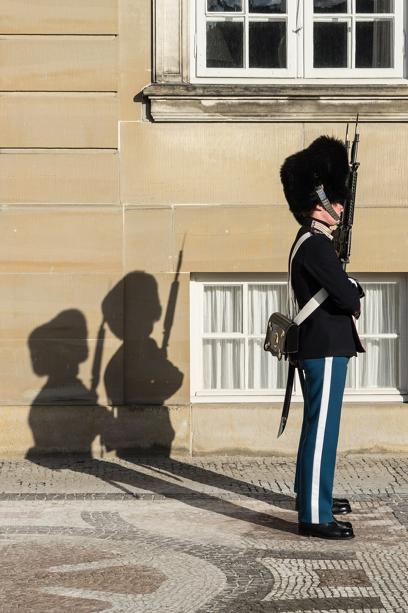
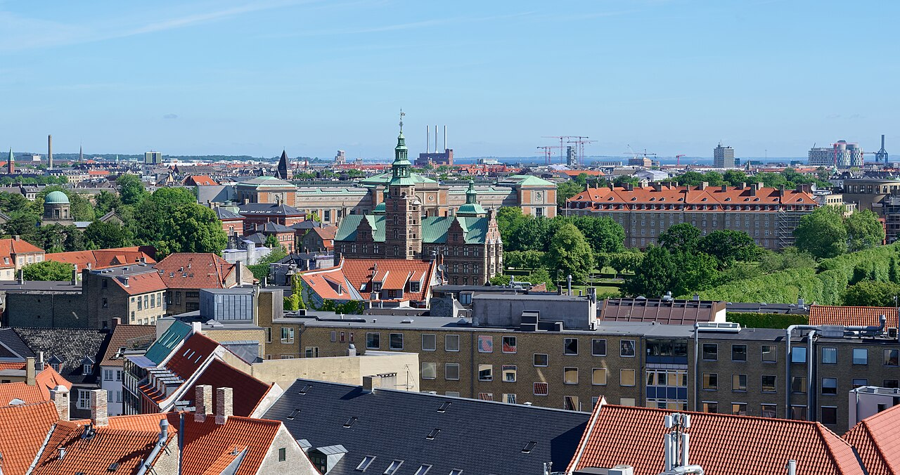
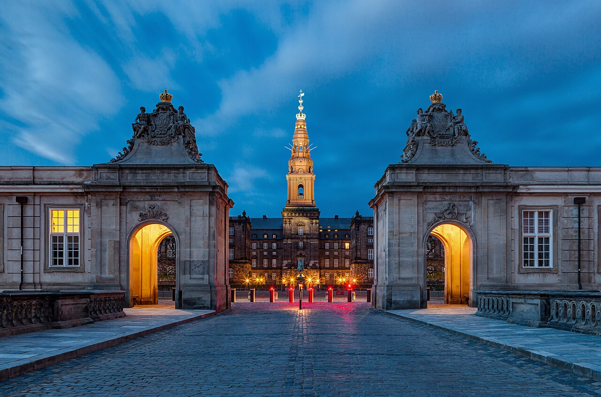
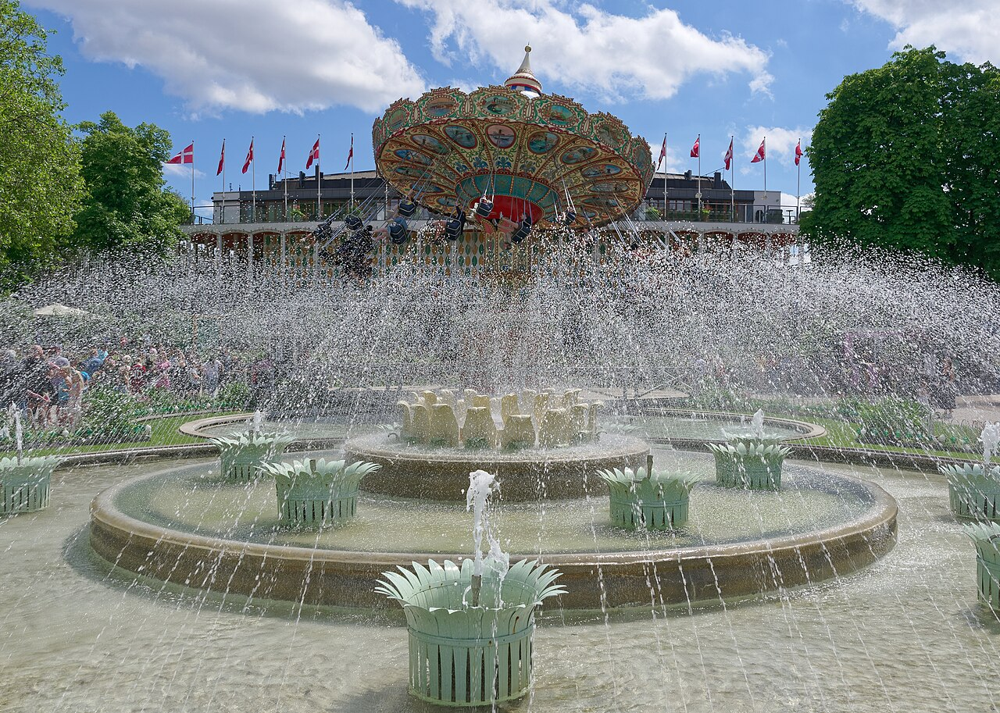
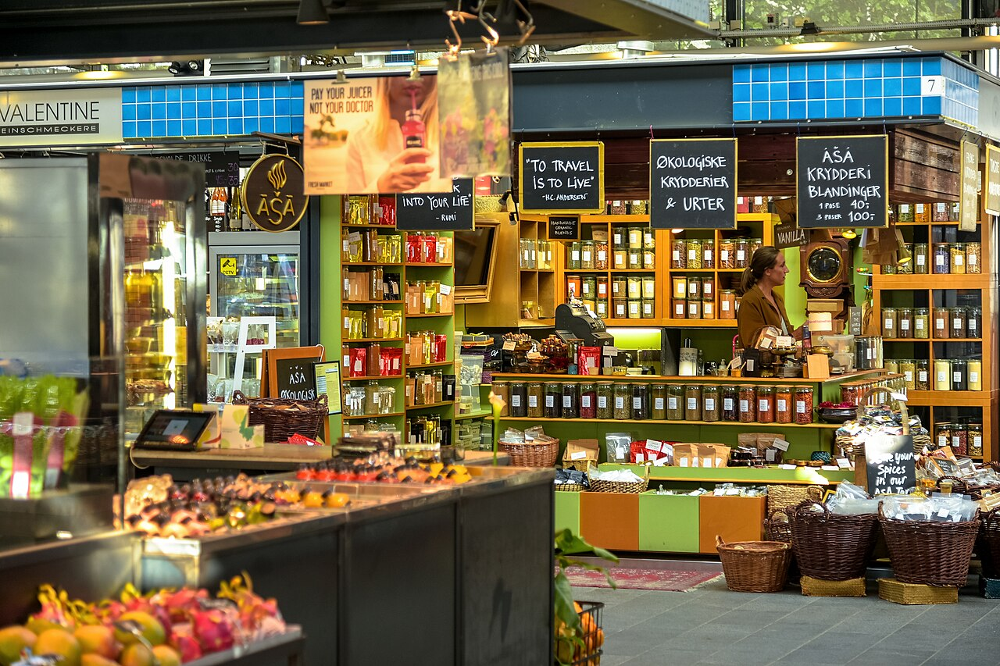
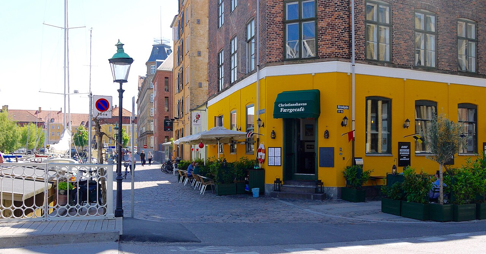
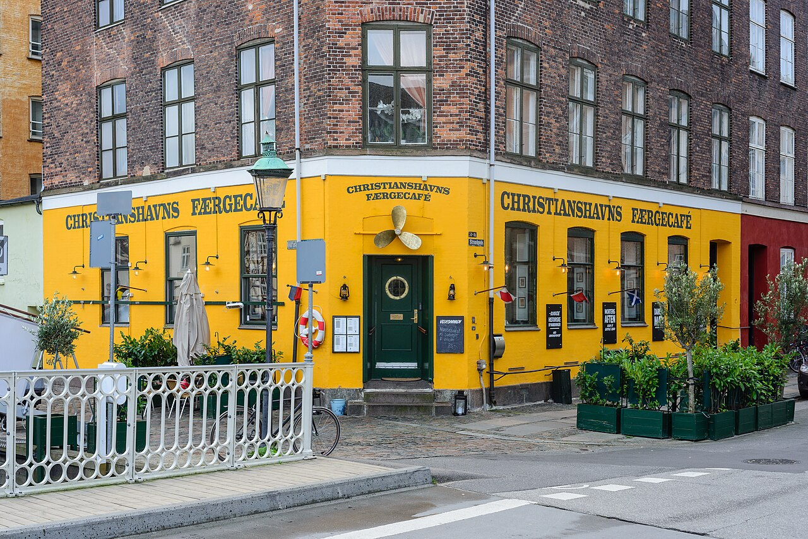

Trumpai apie kelionę: keturios dienos Kopenhagoje, gyvenant apartamentuose Christianshavn rajone. Visos lankomos vietos telpa mieste, tad automobilis nereikalingas – judama pėsčiomis ir metro.
1 diena – atvykimas, Nyhavn, Amalienborgas, Rosenborgo pilis. 2 diena – Christiania, muziejai, Tivoli su Helovino puošyba. 3 diena – kanalų ekskursija, Torvehallerne ir Deep Purple koncertas Royal Arena. 4 diena – ramus atsisveikinimas ir skrydis namo.
🧭 Naudinga žinoti
- Visos vietos yra Kopenhagos centre, per 1–2 km viena nuo kitos – patogiausia keliauti pėsčiomis arba metro M1/M2 linija.
- Iš oro uosto (CPH) iki apartamentų Christianshavn rajone metro M2 linija užtrunka apie 20 min. – stotelė yra tiesiai terminale.
- 4-ą dieną atvykus į oro uostą 13:00 val. (skrydis 15:15) liks apie 2 val. 15 min. – ramiai užteks bagažo registracijai ir saugumo patikrai.
- Į Royal Arena koncertą važiuokite metro tiesiai iki Ørestad stotelės; grįžtant po koncerto patariama eiti link Vestamager stotelės, kur paprastai mažiau žmonių.
1 diena – Atvykimas ir Kopenhagos klasika nakvynė: Christianshavn
Kopenhagos oro uostas (CPH)
09:40–10:15Nusileidus bagažo atsiėmimas ir pasų kontrolė nereikalinga (Šengeno erdvė). Į miestą – metro M2 linija, stotelė tiesiai terminale.

Apartamentai Saint-Nice (Christianshavn)
10:35–11:00Palikite lagaminus – kambariai gali būti dar neparuošti prieš 15:00, bet daiktus priimti leidžiama iš anksto. Christianshavn metro stotelė – 3 min pėsčiomis, patogu ir vėliau grįžtant iš koncerto.

Nyhavn kanalas
11:20–11:40Spalvoti namukai ir senoviniai buriniai laivai – klasikinė Kopenhagos nuotrauka. Geriausia šviesa ryte, kol dar nėra minios.

Amalienborgo pilis (sargybos keitimasis)
11:55–12:40Sargybos keitimasis vyksta apie 12:00 – atėję truputį anksčiau užimsite gerą vietą prie aikštės. Įėjimas į kiemą nemokamas.

Ida Davidsen (pietūs)
13:00–14:00Garsus smėrrebrėdo restoranas, žinomas nuo 1888 m. – paklauskite dienos pasiūlymų, dažnai pigiau nei meniu kaina.

Rosenborgo pilis ir Karaliaus sodas
14:20–16:00Viduje – karūnos brangenybės, lauke – gražus parkas pasivaikščioti. Jei lyja, laiką galima praleisti vien pilyje.

Torvehallerne prekyvietė
16:15–17:15Uždara prekyvietė su vietos gėrybėmis, sūriais, kava ir kepiniais – gera vieta užkandžiams arba dienos pabaigos kavai.

2 diena – Christiania, muziejai ir Tivoli nakvynė: Christianshavn
Laisvasis miestas Christiania
09:15–10:15Alternatyvaus gyvenimo būdo kvartalas su gatvės menu ir dirbtuvėmis – geriausia lankytis ryte, kol rami atmosfera. Nuotraukas darykite ne Pusher Street ruože – vietiniai to nemėgsta.

Ny Carlsberg Glyptotek
10:40–12:45Puiki vieta lietingam orui – stiklinis žieminis sodas su palmėmis ir senovės meno kolekcija. Neskubėkite prie skulptūrų salės po stogu.

Slotskælderen hos Gitte Kik (pietūs)
13:00–14:00Tradicinis, jaukus smėrrebrėdo restoranėlis netoli Christiansborg – populiarus tarp vietinių, todėl verta atvykti tiksliai pietų metu.

Danijos nacionalinis muziejus
14:10–16:00Nemokamas įėjimas – vikingų salė ir bronzos amžiaus „Saulės vežimas“ verti dėmesio. Gerai tinka lietingam popiečiui.

Tivoli parkas (Helovino sezonas)
16:15–18:30Spalio mėnesį parkas papuoštas tūkstančiais moliūgų ir apšviestas – gražiausia atmosfera temstant (apie 17:30–18:00). Viduje daug uždarų kavinių, jei atšąla ar palyja.

3 diena – Kanalai, Torvehallerne ir Deep Purple koncertas nakvynė: Christianshavn
Kanalų ekskursija laivu (Nyhavn prieplauka)
09:30–10:25Žiemą plaukiojama uždaromis, šildomomis valtimis – malonu net vėsią rudens dieną. Miestą apžvelgsite iš vandens per ~55 min.

Torvehallerne (apsipirkimas)
10:50–12:55Pasivaikščiokite tarp prekystalių, paragaukite vietinių sūrių ar kavos, kol artėja pietų metas.

Torvehallerne (pietūs)
13:00–14:00Rinkitės bet kurį iš daugybės maisto stalelių – nuo šviežios žuvies iki naujosios danų virtuvės. Po pietų grįžkite pailsėti prieš vakaro koncertą, nes sutemsta jau apie 16:30.

Royal Arena – Deep Purple koncertas
17:25–22:30Durys atsidaro 18:00. Važiuokite metro tiesiai iki Ørestad stotelės. Po koncerto grįžtant patariama eiti link Vestamager stotelės – ten paprastai mažiau žmonių nei prie Ørestad.

4 diena – Atsisveikinimas ir skrydis namo CPH → KUN 15:15
Café Wilder (pusryčiai)
09:15–10:30Jauki vietinė kavinė Christianshavn rajone, mėgstama vietinių pusryčiams – gera vieta ramiai atsisveikinti su kvartalu.

Christianshavn kanalai (paskutinis pasivaikščiojimas)
10:35–11:30Trumpas pasivaikščiojimas palei kanalus ir senus laivus prieš grįžtant susikrauti lagaminų. Rytą šviesa švelni – gerai tinka paskutinėms nuotraukoms.

Apartamentai Saint-Nice (bagažo pasiėmimas ir išsiregistravimas)
11:35–12:20Pasiimkite lagaminus ir atsiskaitykite su apartamentais. Iš čia iki oro uosto metro M2 linija (Christianshavn stotelė – 3 min pėsčiomis) trunka apie 20 min.
📍 Google MapsKopenhagos oro uostas (CPH)
13:00–15:15Atvykus 13:00 val. liks pakankamai laiko bagažo registracijai ir saugumo patikrai prieš 15:15 skrydį. Metro stotelė yra tiesiai terminale.
💶 Biudžeto suvestinė
4 keliautojai, 3 naktys. Automobilis nenuomojamas – judama pėsčiomis ir metro, todėl nuomos bei kuro išlaidų nėra.
| Kategorija | Min | Tikėtina | Max |
|---|---|---|---|
| ✈️ Skrydžiai (KUN↔CPH, 4 keleiviai) | €419 | €620 | €820 |
| 🏠 Nakvynė (3 naktys, Christianshavn) | €441 | €441 | €937 |
| 🍽️ Maistas (4 žm. × 4 d.) | €536 | €960 | €1 504 |
| 🎟️ Bilietai ir koncertas | €592 | €844 | €1 828 |
| Viso | €1 988 | €2 865 | €5 089 |
| Vienam žmogui | ~€497 | ~€716 | ~€1 272 |
Skrydžio kaina (€419) yra už rankinį bagažą – jei reikės registruoto bagažo keturiems, priskaičiuokite papildomai. Didžiausią biudžeto neapibrėžtumą sudaro Deep Purple bilietai (nuo €76 iki €345 asmeniui priklausomai nuo vietos ir pardavėjo) – jei bilietai jau nupirkti, šią sumą galite išbraukti iš likusio biudžeto.
ℹ️ Praktinė informacija
- Skrydis ten
- KUN → CPH, 2026-10-23, 09:10–09:40
- Skrydis atgal
- CPH → KUN, 2026-10-26, 15:15–17:45
- Apartamentai
- Saint-Nice, Christianshavn – registracija galima nuo ~15:00, bagažą priima ir anksčiau
- Išsiregistravimas
- 4-ą dieną iki 12:20
- Automobilis
- Nenuomojamas – visi persikėlimai pėsčiomis arba metro
- Apartamentų kontaktas
- ________________
- Grupės kontaktinis asmuo
- ________________